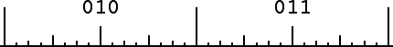

| Purpose To show that the notion of geometric addresses, developed
in our study of IFS, can be adapted to provide a visual interpretation
of decimals illuminating some troublesome properties of decimals, for
example, why |
| Materials Paper and pencil, a ruler with an inch and a centimeter scale |
| Background |
| Procedure Use a ruler to subdivide a line segment into pieces of a given length. Attach an address to each piece. Subdivide each of these pieces in the same fashion. Attach an address to each of these smaller pieces. |
| Sample For the sample we use the centimeter scale; for the exercise we use the inch scale because this allows a greater number of subdivisions without eye strain. |
| Conclusion |
| Exercises |